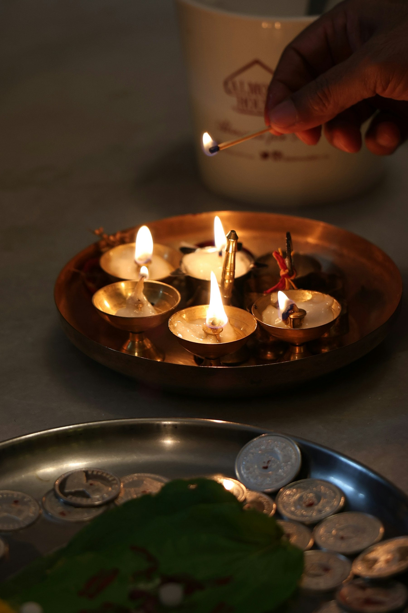

Panchamrit Abhisheka
A traditional offering performed with sacred ingredients and devotion.
View details →
Welcome to Shri Varasiddhi Vinayaka Temple. Discover temple worship, puja services, community celebrations and convenient resident access in one place.
Access the temple’s most-used services and information without searching through multiple pages.
Explore available worship services and contribution details.
Explore services → ₹Make a contribution and follow its verification status.
Continue to donations → ▤Review your previous puja registrations and records.
View history → ◷Read important announcements and community updates.
Read notices →Located within the Arvind Oasis community, Shri Varasiddhi Vinayaka Temple is dedicated to Lord Ganesha and brings residents together through daily worship, special sevas and shared celebrations.
The temple’s journey began with the Bhoomi Puja on 23 November 2023, followed by the 48-day Mandala Puja and Prana Prathishtapana on 14 March 2024.
Discover the temple history →
Explore the services currently listed by the temple. Please refer to the registration page for applicable contribution details.
A traditional offering performed with sacred ingredients and devotion.
View details →A continuing seva offered in the name of devotees on special occasions.
View details →A regular observance dedicated to Lord Ganesha.
View details →Check the official notice board for event information, puja updates and important temple communications.


Sign in to register for pujas, make donations and access your receipts and history.